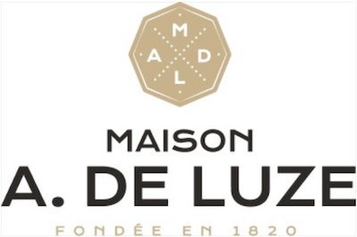
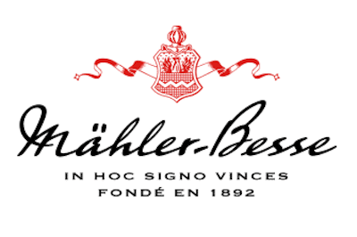

Domaine à Bordeaux


Histoire
La région viticole bordelaise, située dans le sud-ouest de la France, est l'une des plus prestigieuses et vastes du monde, couvrant environ 120,000 hectares. Elle est renommée pour ses vins rouges élégants et puissants, principalement issus de cépages tels que le Cabernet Sauvignon, le Merlot et le Cabernet Franc. Bordeaux se distingue par sa classification des vins datant de 1855, qui inclut des châteaux célèbres tels que Margaux, Latour et Mouton Rothschild.